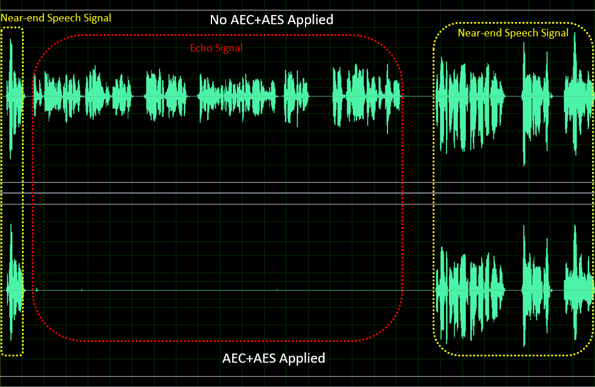
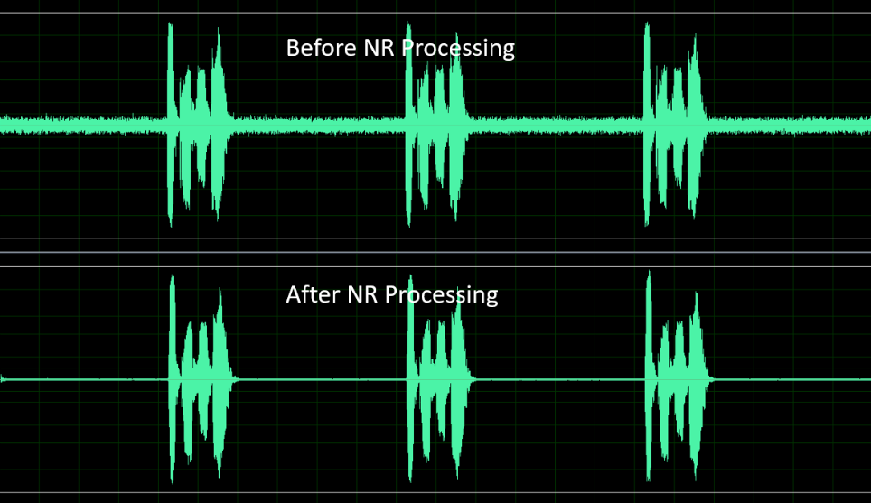

5. VQE算法功能介绍¶
5.1. 语音音质增强 (VQE)¶
针对语音讯号处理（SSP）算法，当近端语音讯号遭受到来自远端的回声干扰或是近端stationary noise的干扰时，可采用SSP内的算法功能来抑制这些干扰，进而提高语音讯号的品质。SSP内提供的解决方案，包括线性回声消除（AEC）、非线性回声抑制（AES）、语音降噪（NR）、自动增益控制（AGC ）、…等功能。SSP算法支持8kHz及16kHz采样率、单声道、16位采样长度的语音讯号。在接下来的页面会介绍每个算法功能及所使用的参数。
参数para_fun_config对应至档案 cvi_comm_aio.h 内的u32OpenMask, 可控制麦克风路径的SSP算法功能，参数para_spk_fun_config可控制扬声器路径SSP算法功能，各个位对应的算法功能如下表所述。
para_fun_config |
描述(麦克风路径) |
|---|---|
位元0 |
0:关闭AEC
1:开启AEC
|
位元1 |
0:关闭AES
1:开启AES
|
位元2 |
0:关闭NR
1:开启NR
|
位元3 |
0:关闭AGC
1:开启AGC
|
位元4 |
0:关闭Notch Filter
1:开启Notch Filter
|
位元5 |
0:关闭DC Filter
1:开启DC Filter
|
位元6 |
0:关闭DG
1:开启DG
|
位元7 |
0:关闭Delay
1:开启Delay
|
para_spk_fun_config |
描述 (扬声器路径) |
|---|---|
位元0 |
0:关闭AGC
1:开启AGC
|
位元1 |
0:关闭EQ
1:开启EQ
|
表: para_fun_config/para_spk_fun_config参数说明
5.2. AEC/AES (Acoustic Echo Cancellation/Acoustic Echo Suppression)¶
任何双工通话系统的架构都存在着回声的干扰。回声消除器可以消除通过近端声学路径 耦合回麦克风的扬声器输出的回声。采用所提供的解决方案，线性自适应滤波器模块 （AEC）搭配非线性回声抑制模块（AES）可以有效地抑制回声，从而提高语音通话品质。
{kind=link}

图: AEC+AES处理前后的性能
提供四个可调参数，用于调适AEC/AES的性能，它们分别是：
para_aec_init_filter_len/para_aec_filter_len: 自适应滤波器的长度。根据不同样机回声拖尾的时间调整适当的滤波器长度。若选择较长的长度，会导致较高的MIPS和功耗。
para_aec_init_filter_len: 仅用于一开始出现回声时的调适。
para_aes_std_thrd: 残留回声判断阈值。值设较大时，近端语音品质较佳但残留回声较多。反之，值设较小时，近端语音品质较差但残留回声较少。
para_aes_supp_coeff: 残留回声抑制力道。值设越大，对残留回声抑制力道越大，但同时也会对近端语音带来越多细节音的丢失/损伤。
AEC/AES参数 |
可调范围 |
描述 |
para_aec_init_filter_len/para_aec_filter_len |
1 - 13 |
8kHz采样率: [1,13]对应[20ms,260ms]
16kHz采样率: [1,13]对应[10ms,130ms]
|
para_aes_std_thrd |
0 - 39 |
0: 残留回声判断阈值最小
39: 残留回声判断阈值最大
|
para_aes_supp_coeff |
0 - 100 |
0: 残留回声抑制力道最小
100: 残留回声抑制力道最大
|
表: AEC/AES参数说明
5.3. NR (Noise Reduction)¶
NR模块可以抑制周围环境的stationary noise，例如风扇噪音，空调噪音， 引擎噪音，白/粉红杂讯，…等等。凭靠着专有的语音智能Speech VAD算法， NR可以保持住语音信号，同时又可以有效地抑制stationary noise， 从而提高语音通话的品质。

图: NR处理前后的性能
提供三个可调参数，用于调适NR的性能，它们分别是：
para_nr_init_sile_time:**初始静音的时间长度。CODEC开电瞬间会产生随机无意义的噪音讯号， **para_nr_init_sile_time 可将这段讯号设置成静音。
para_nr_snr_coeff: signal-to-Noise Ratio（SNR）跟踪系数。若参数值较大， 则NR会具有较高的降噪能力，但语音信号可能会较容易失真。相反地，参数值较小， 则NR将抑制较少的噪声信号，但会具有较好的语音品质性能。下表是基于不同SNR环境下， 此参数合适的调整范围，在每种SNR情况下，参数值越大，对stationary noise的抑制力道就越大。
NR参数 |
可调范围 |
描述 |
para_nr_init_sile_time |
0 - 250 |
对应0s至5s，
每阶20ms
|
表: NR参数说明
周遭的SNR环境 |
调整范围 |
描述 |
低 |
0 - 3 |
0: 在降噪方面最不积极
3: 在降噪方面最积极
|
中 |
4 - 10 |
4: 在降噪方面最不积极
10: 在降噪方面最积极
|
高 |
11 - 25 |
11: 在降噪方面最不积极
25: 在降噪方面最积极
|
表: para_nr_snr_coeff参数说明
5.4. AGC (Automatic Gain Control)¶
AGC模块可以自动将输出电平调整到预定范围，以提供更舒适的听觉体验。 如果输入信号低于“Target Low”，则AGC会将输出电平往“Target Low”调整。 另一方面，如果输入信号高于“Target High”，则AGC会将输出电平往“Target High”调整。

图: AGC调整信号电平

图: AGC处理前后的性能
提供四个可调参数，用于调适麦克风路径的AGC性能，它们分别是：
para_agc_max_gain: 此参数是信号可以被放大的最大增益。
para_agc_target_high: 此参数是AGC将会去达到的“Target High”水平。 对于高于 para_agc_target_high**的输入信号，AGC会将其收敛到 **para_agc_target_high。
para_agc_target_low: 此参数是AGC将会去达到的“Target Low”水平。 对于低于 para_agc_target_low**的输入信号，AGC会将其收敛到 **para_agc_target_low。 若在达到 para_agc_target_low**之前就已达到 **para_agc_max_gain ， 则AGC仅会收敛到 para_agc_max_gain 。
para_agc_vad_ena: Speech-activated AGC功能。开启此功能并同时开 启NR及AEC/AES功能时，能使AGC避免放大背景残留stationary noise及残留回 声，以获得较佳的效果。
AGC参数 |
可调范围 |
描述 |
para_agc_max_gain |
0 - 6 |
[0,6]对应的
最大提升增益为[6dB,42dB]，每阶6dB
|
para_agc_target_high |
0 - 36 |
0至36对应0dB至-36dB |
para_agc_target_low |
0 - 72 |
0至72对应0dB至-72dB |
para_agc_vad_ena |
0 - 1 |
0: 关闭Speech-activated AGC功能
1: 开启Speech-activated AGC功能
|
表: 麦克风路径的AGC参数说明
para_spk_agc_max_gain、para_spk_agc_target_high、para_spk_agc_target_low 这三个参数用于调适扬声器路径的AGC性能, 其参数定义及调适范围与麦克风路径的AGC相同。
5.5. Notch Filter¶
Notch Filter参数 |
可调范围 |
描述 |
para_notch_freq |
0 - 1 |
0: notch frequency为1kHz
1: notch frequency为4kHz
|
5.6. DG (Digital Gain)¶
此功能有助于降低residual echo及 residual stationary noise。 若mic channel中的讯号gain level较小，则不建议开启此功能。
DG参数 |
可调范围 |
描述 |
para_dg_target |
1 - 12 |
1: 对残留回声/噪声抑制最不积极，但语音质量最好
12: 对残留回声/噪声抑制最积极，但语音质量最差
|
5.7. Delay¶
此功能用于延迟参考信号，可使AEC/AES加速收敛一开始出现的回声。 若已通过调整参数para_aec_init_filter_len加速收敛首端的回声， 则不建议开启此功能。
Delay参数 |
可调范围 |
描述 |
para_delay_sample |
1 - 3000 |
1至3000对应1至3000 samples |
5.8. Equalizer¶
此功能是针对语音讯号进行均衡处理，可经由调适band的center frequency，
gain以及quality factor，调节出所想要语音讯号呈现的频率响应，也可以补偿
硬件或喇叭单体所造成的不完美频率响应。
Equalizer参数 |
可调范围 |
描述 |
para_spk_eq_nband |
1 - 5 |
1至5对应1至5 bands |
para_spk_eq_freq[] |
8kHz Fs: 0 - 9
16kHz Fs: 0 - 10
|
band的center frequen cy，参照para_spk_eq_freq表 |
para_spk_eq_gain[] |
0 - 60 |
band的gain，参照para_spk_eq_gain表 |
para_spk_eq_qfactor[] |
0 - 17 |
band的quality factor。
0: 以para_spk_eq_freq为中心的频率响应曲线最平滑，但对其附近频率影响
的范围最广
17: 以para_spk_eq_freq为中心的频率响应曲线最尖锐，但
对其附近频率影响的范围最窄
|
【注意】:
当para_spk_eq_nband配置为1时，需同时配置所对应的para_spk_eq_freq[0]、para_spk_eq_gain[0]、para_spk_eq_qfactor[0]。
当para_spk_eq_nband配置为2时，需同时配置所对应的para_spk_eq_freq[0]、 para_spk_eq_gain[0]、para_spk_eq_qfactor[0] 以及 para_spk_eq_freq[1]、 para_spk_eq_gain[1]、para_spk_eq_qfactor[1]，其中阵列index 0的参数会对 应到第一个band，阵列index 1的参数会对应到第二个band。以此类推。
para_spk_eq_freq 参数 |
应的center frequency (Hz) |
|---|---|
0 |
100 |
1 |
200 |
2 |
250 |
3 |
350 |
4 |
500 |
5 |
800 |
6 |
1200 |
7 |
2500 |
8 |
3300 |
9 |
3990 |
10( 只适用于采样率16kHz ) |
7990 |
para_spk_eq_gain 参数 |
对应的gain(dB) |
para_spk_eq_gain参数 |
对应的gain(dB) |
|---|---|---|---|
0 |
-40 |
31 |
-9 |
1 |
-39 |
32 |
-8 |
2 |
-38 |
33 |
-7 |
3 |
-37 |
34 |
-6 |
4 |
-36 |
35 |
-5 |
5 |
-35 |
36 |
-4 |
6 |
-34 |
37 |
-3 |
7 |
-33 |
38 |
-2 |
8 |
-32 |
39 |
-1 |
9 |
-31 |
40 |
+0 |
10 |
-30 |
41 |
+1 |
11 |
-29 |
42 |
+2 |
12 |
-28 |
43 |
+3 |
13 |
-27 |
44 |
+4 |
14 |
-26 |
45 |
+5 |
15 |
-25 |
46 |
+6 |
16 |
-24 |
47 |
+7 |
17 |
-23 |
48 |
+8 |
18 |
-22 |
49 |
+9 |
19 |
-21 |
50 |
+10 |
20 |
-20 |
51 |
+11 |
21 |
-19 |
52 |
+12 |
22 |
-18 |
53 |
+13 |
23 |
-17 |
54 |
+14 |
24 |
-16 |
55 |
+15 |
25 |
-15 |
56 |
+16 |
26 |
-14 |
57 |
+17 |
27 |
-13 |
58 |
+18 |
28 |
-12 |
59 |
+19 |
29 |
-11 |
60 |
+20 |
30 |
-10 |
VQE 针对 Audio Input 和 Audio Output 两条通路的异同点，分别通过 UpVQE 和 DnVQE 两个调度逻辑来 处理两个通路的数据，UpVQE包含AEC、AES、NR、AGC。DnVQE目前不支持。对应参数 可参考表头档cvi_comm_aio.h。